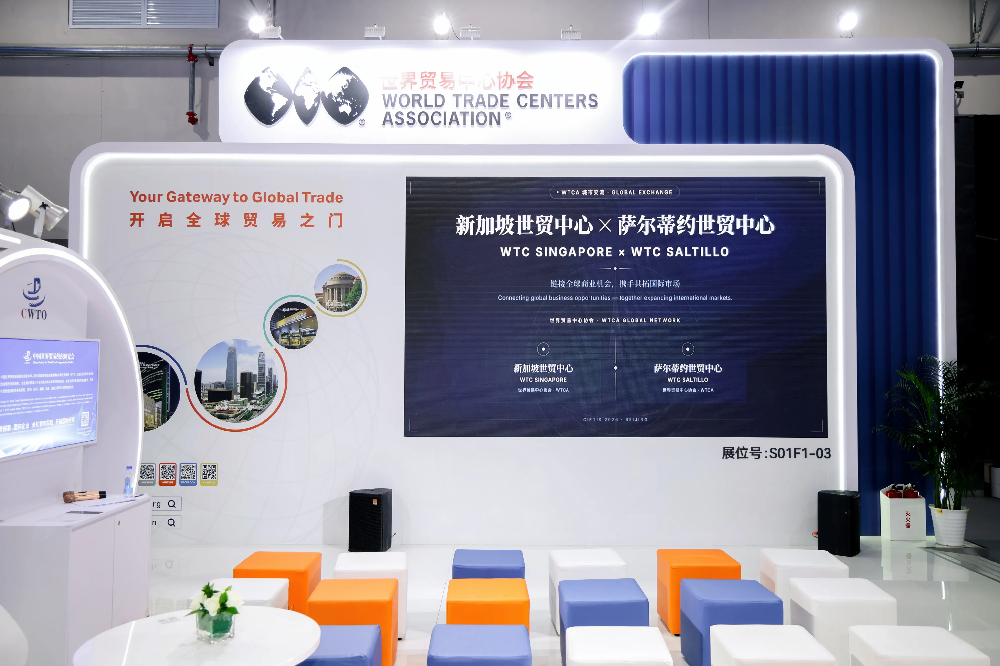
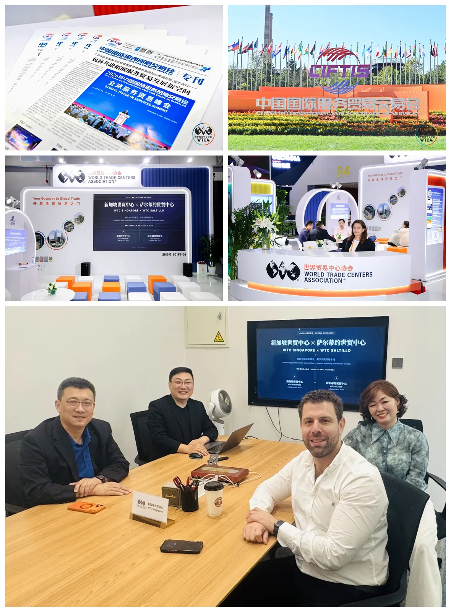

Summary: At the WTCA pavilion during CIFTIS 2026, Blake Zhang, Chairman of WTC Singapore, Zhu Xiaolan, Chief Representative & CEO, and I (Bruce Dong, Secretary-General & COO) met Edgar Braham, Chief Executive Officer of World Trade Center Saltillo, Mexico. A single conversation put two critical routes for Chinese companies going global on the table at the same time — landing in the North American manufacturing corridor, and acquiring a way into European supply chains.

At CIFTIS 2026, World Trade Center partners from around the world arrived at the WTCA's dedicated pavilion one after another. This time, Edgar Braham, Chief Executive Officer of World Trade Center Saltillo in Mexico, travelled to China to meet the WTC Singapore delegation face to face. Seated alongside Edgar were Blake Zhang, Chairman of WTC Singapore and Chairman of Baker Capital Group; Zhu Xiaolan, Chief Representative & CEO; and myself. One meeting, three roles in the same frame — itself the most direct illustration of what "connecting network to network" means.
I. Edgar's answer: Mexico as the North American bridgehead for Chinese automotive and new-energy companies
Edgar opened with Saltillo's answer. Drawing on Mexico's distinctive position in global supply chains, he explained, World Trade Center Saltillo provides one-stop landing services and customised site-selection support for Chinese automotive and new-energy supply-chain companies, helping them enter the duty-free manufacturing corridor.
For Chinese carmakers and new-energy companies looking to break into North America, that is precisely the scarce lever which turns "we want to go to North America" into "we are landing in North America" — not a directory of institutions, but an on-the-ground capability spanning site selection, establishment and compliance. Many companies can see the North American opportunity, yet stall against information barriers around local employment rules, local supply-chain matchmaking and compliance risk control. They remain permanently at the stage of wanting to go global, and never land securely. Saltillo's value lies in taking on that practical last mile.
II. Blake Zhang's complement: one European acquisition as the entry ticket into a supply chain
Blake Zhang supplied the second route from the capital side. He shared the case of Nava Smart, a Chinese logistics technology company, acquiring an equity stake in a century-old German enterprise — a demonstration of how M&A advisory and strategic equity investment can help a company break into European supply chains quickly and deliver step-change growth.
The case clarifies two different things. Leading technology or production capacity answers the question "is this worth investing in." A well-structured cross-border acquisition answers a different one: how a company reaches the European supply chain and is accepted by the local market by the shortest possible route. For many Chinese technology companies, building European channels from scratch carries far more time and uncertainty than embedding directly through an established local foothold.

III. Reading the two routes together
This is where I put the two routes side by side. On the North American end, Mexico's location and its duty-free corridor solve "manufacturing landing." On the European end, M&A advisory and strategic equity investment solve "supply-chain embedding." One is a bridgehead for physical capacity; the other is an entry ticket built on capital and channels. That is exactly where WTC ONE Club, the GlobalX go-global accelerator and the WTC Fund innovation capital ecosystem are designed to work in concert — using the network to bring the opportunities at both ends to the same group of Chinese companies.
It returns to something I keep saying: the hardest step in going global is not "going out," it is "getting in." Edgar offers the local route for getting into North America; Blake offers the capital route into Europe. What WTC Singapore has to do is turn these two kinds of scarce resource into global pathways that members can reuse and actually act on.
The bustle of an exhibition passes. The real pathways that survive a cross-ocean introduction are the value a circle genuinely cannot manufacture. For the next stop, we go with our members.
About the World Trade Centers Association
The World Trade Centers Association (WTCA), founded in 1970, is a non-profit, non-political organization dedicated to establishing and operating World Trade Centers worldwide to promote regional economic development and international trade and investment. Headquartered in New York, its global network spans nearly 100 countries and territories with over 300 World Trade Centers, serving thousands of member companies and clients by helping them source, find customers and improve financing and investment access.
About World Trade Center Singapore (WTC Singapore)
World Trade Center Singapore is the WTCA's officially authorized member in Singapore. Through three business pillars — WTC ONE Club, GlobalX and WTC Fund — it connects global capital, innovation resources and market opportunities, providing enterprises with cross-border matchmaking and globalization support.